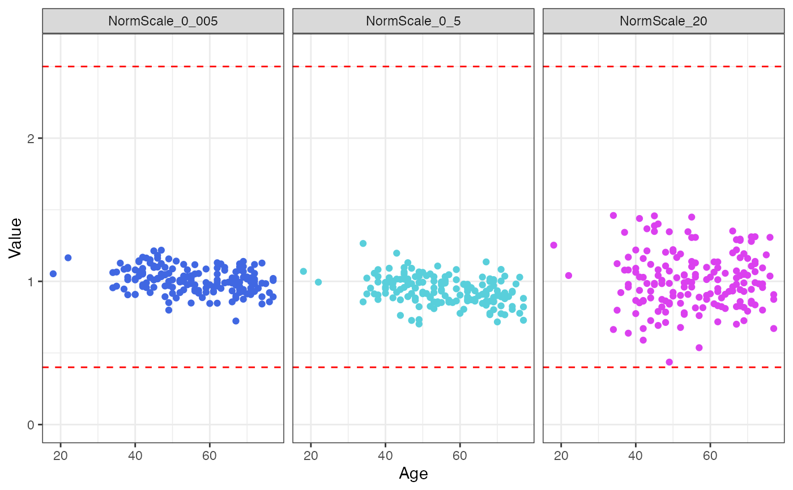
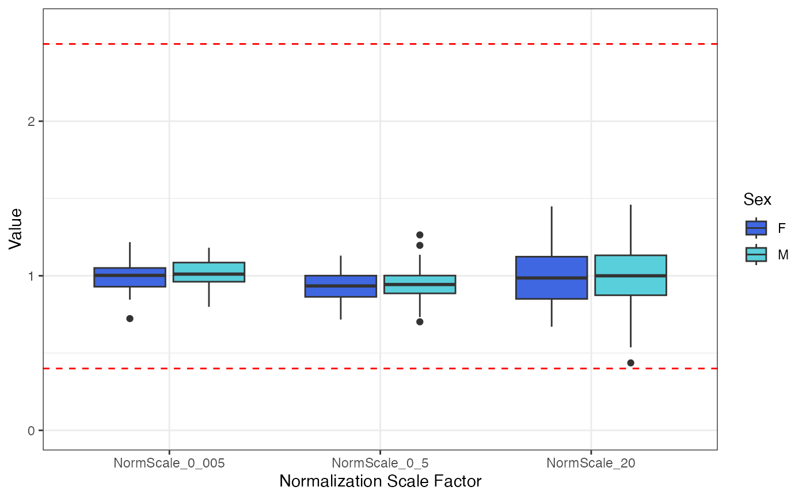

Pre-process an ADAT file containing raw analyte RFU values in preparation for analysis. For more details please refer to the pre-processing how-to article
Usage
preProcessAdat(
adat,
filter.features = TRUE,
filter.controls = TRUE,
filter.qc = TRUE,
filter.outliers = FALSE,
data.qc = NULL,
log.10 = FALSE,
center.scale = FALSE
)Arguments
- adat
A
soma_adatobject created usingread_adat(), including SeqId columns (seq.xxxxx.xx) containing raw RFU values.- filter.features
Logical. Should non-human protein features (SeqIds) be dropped? Default is
TRUE.- filter.controls
Logical. Should SomaScan technical control samples be dropped? If
TRUE, this retains all samples whereSampleType = "Sample"(study samples) and discards all others including buffer, calibrator, and QC control samples. Default isTRUE.- filter.qc
Logical. If
TRUEonly samples that pass default normalization acceptance criteria will be retained. Default isTRUE.- filter.outliers
Logical. Should the
adatobject drop outlier samples? An outlier sample is defined by >= 5% of filtered SeqIds exceeding +/- 6 MAD and 5x fold-change from the median signal. This filter is typically appropriate for studies on plasma, serum, and other biological matrices generally exhibiting homeostatic characteristics. For studies on matrices such as tissue homogenate, cell culture, or study designs containing client-provided background lysis buffer controls (or similar), this filter will likely not be appropriate. Default isFALSE. If set toTRUEit is highly recommended thatfilter.controlsis also set toTRUE- data.qc
Character. Character vector of variable names for which data QC plots are desired. Default is
NULL, which does not generate any QC plots. Note: These plots are for visual inspection only, no samples or features are dropped from the outputsoma_adatobject.- log.10
Logical. Should the RFU values be log10 transformed? Default is
FALSE.- center.scale
Logical. Should the RFU values be Z-transformed (centered and scaled)? Default is
FALSE. If set to set toTRUEit is highly recommended thatlog.10is also set toTRUE
Details
The soma_adat object is pre-processed with the following steps:
Filter features -> down to human protein analytes
Filter samples -> by the following order and criteria: a) Retain study samples only (dropping buffer, calibrator, and QC samples) b) Only those that pass default normalization acceptance criteria c) Those not identified as outliers.
Data QC -> plots of normalization scale factors by clinical covariates
Transformations -> log10, center, and scale analyte RFU values
Examples
preProcessAdat(example_data, data.qc = c("Age", "Sex"))
#> ✔ 305 non-human protein features were removed.
#> → 214 human proteins did not pass standard QC
#> acceptance criteria and were flagged in `ColCheck`. These features
#> were not removed, as they still may yield useful information in an
#> analysis, but further evaluation may be needed.
#> ✔ 6 buffer samples were removed.
#> ✔ 10 calibrator samples were removed.
#> ✔ 6 QC samples were removed.
#> ✔ 2 samples flagged in `RowCheck` did not
#> pass standard normalization acceptance criteria (0.4 <= x <= 2.5)
#> and were removed.
#> → Data QC plots were generated:
#> $Age

#>
#> $Sex

#>
#> ══ SomaScan Data ══════════════════════════════════════════════════════
#> SomaScan version V4 (5k)
#> Signal Space 5k
#> Attributes intact ✓
#> Rows 168
#> Columns 5013
#> Clinical Data 34
#> Features 4979
#> ── Column Meta ────────────────────────────────────────────────────────
#> ℹ SeqId, SeqIdVersion, SomaId, TargetFullName, Target,
#> ℹ UniProt, EntrezGeneID, EntrezGeneSymbol, Organism, Units,
#> ℹ Type, Dilution, PlateScale_Reference, CalReference,
#> ℹ Cal_Example_Adat_Set001, ColCheck,
#> ℹ CalQcRatio_Example_Adat_Set001_170255, QcReference_170255,
#> ℹ Cal_Example_Adat_Set002,
#> ℹ CalQcRatio_Example_Adat_Set002_170255, Dilution2
#> ── Tibble ─────────────────────────────────────────────────────────────
#> # A tibble: 168 × 5,014
#> row_names PlateId PlateRunDate ScannerID PlatePosition SlideId
#> <chr> <chr> <chr> <chr> <chr> <dbl>
#> 1 258495800012_3 Example… 2020-06-18 SG152144… H9 2.58e11
#> 2 258495800004_7 Example… 2020-06-18 SG152144… H8 2.58e11
#> 3 258495800010_8 Example… 2020-06-18 SG152144… H7 2.58e11
#> 4 258495800003_4 Example… 2020-06-18 SG152144… H6 2.58e11
#> 5 258495800009_4 Example… 2020-06-18 SG152144… H5 2.58e11
#> 6 258495800012_8 Example… 2020-06-18 SG152144… H4 2.58e11
#> 7 258495800001_3 Example… 2020-06-18 SG152144… H3 2.58e11
#> 8 258495800004_8 Example… 2020-06-18 SG152144… H2 2.58e11
#> 9 258495800001_8 Example… 2020-06-18 SG152144… H12 2.58e11
#> 10 258495800009_8 Example… 2020-06-18 SG152144… H10 2.58e11
#> # ℹ 158 more rows
#> # ℹ 5,008 more variables: Subarray <dbl>, SampleId <chr>,
#> # SampleType <chr>, PercentDilution <int>, SampleMatrix <chr>,
#> # Barcode <lgl>, Barcode2d <chr>, SampleName <lgl>,
#> # SampleNotes <lgl>, AliquotingNotes <lgl>, …
#> ═══════════════════════════════════════════════════════════════════════